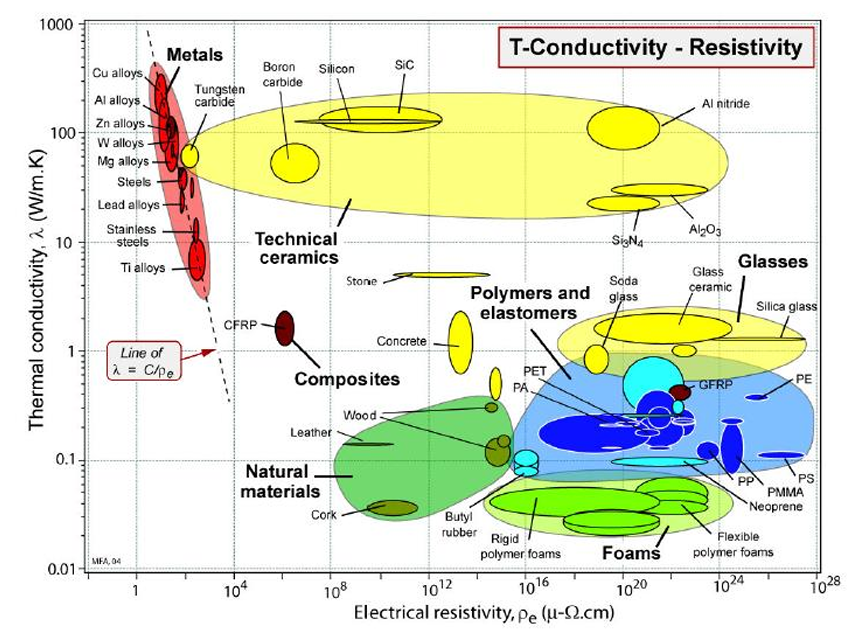
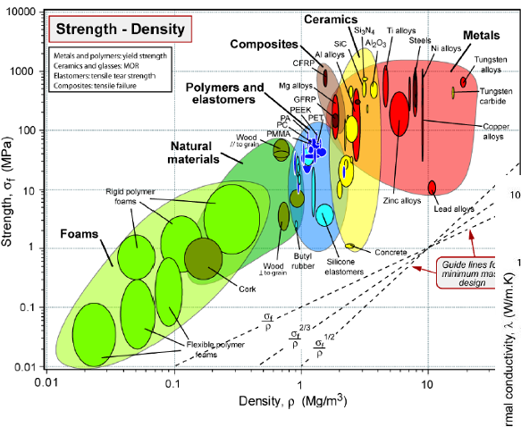

During the screening and ranking phases, engineers heavily utilize Material Selection Charts. These charts plot one material property on the Y-axis and another property on the X-axis (usually using logarithmic scales due to the massive range of values). Whole families of materials (Metals, Ceramics, Polymers, Foams) are drawn as "bubbles" enclosing their specific members[cite: 14].

Using Multiple Charts
Often, a single chart cannot capture all the constraints and objectives required for a specific design. In these cases, engineers will use two or more charts sequentially[cite: 14].
Example: An Overhead Transmission Cable
- Constraint: The cable must not break under tension. Therefore, strength must be greater than 80 MPa[cite: 14].
- Action: The engineer uses a Strength vs. Density chart to screen out (eliminate) any material bubble that falls below the 80 MPa line[cite: 14].
- Objective: The cable needs to transmit electricity as efficiently as possible[cite: 14].
- Action: The engineer takes the surviving materials and looks at a Thermal Conductivity vs. Electrical Resistivity chart to rank them based on which one has the absolute lowest resistivity[cite: 14].

Watch the video below to see how the selection process is applied using material bubble charts:
Practice Exercises
Test your knowledge on Selection Charts.
1. Why do material selection charts often use logarithmic scales on their axes?
A) To make the charts look more mathematically complex
B) Because the range of property values across different material kingdoms is extremely massive
C) Logarithmic scales are only used for polymer materials
2. What do the "bubbles" on a material selection chart represent?
A) A whole family or class of materials (like Metals or Foams) enclosing its specific members
A) The physical atomic size of the materials
C) Areas of the chart where no materials currently exist
3. In the Overhead Transmission Cable example, what type of chart is used to screen out materials that are too weak?
A) Thermal Conductivity vs. Electrical Resistivity
B) Young's Modulus vs. Cost
C) Strength vs. Density
4. In that same example, what type of chart is then used to rank the surviving materials based on the objective?
A) Thermal Conductivity vs. Electrical Resistivity
B) Strength vs. Density
C) Hardness vs. Temperature